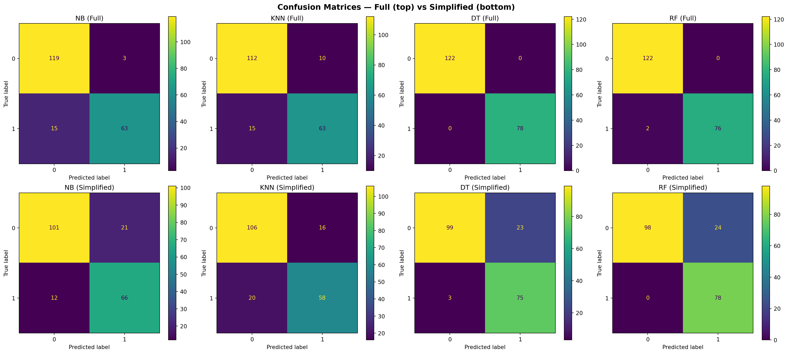
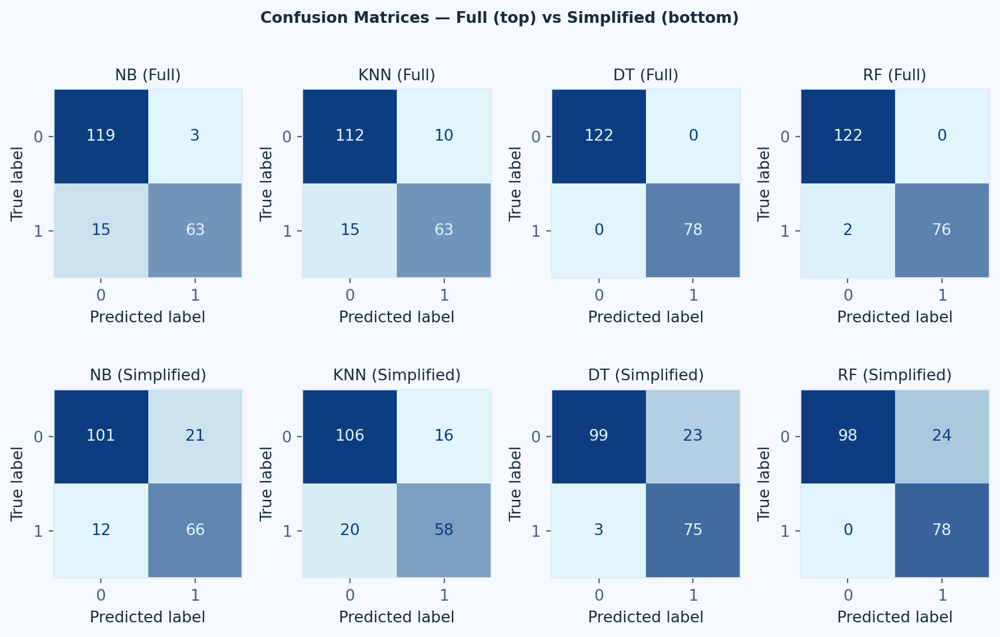
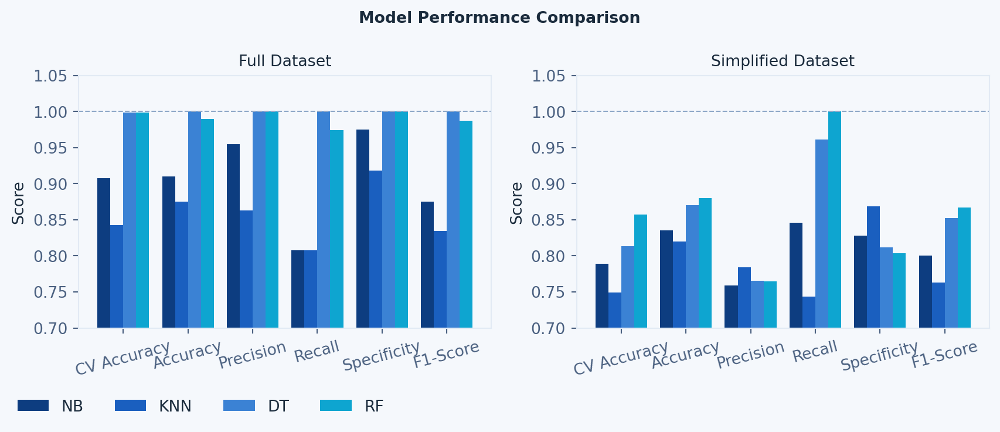

(1000, 16)Machine Learning Python Code
About
The graphics displayed are the evaluation results of the full and simplified heart disease datasets. The code below was used to produce them for the assignment: “Evaluating Machine Learning Classification Algorithms for Heart Disease Prediction: Performance on Full and Reduced Clinical Datasets”
Evaluation Results
Shape of Dataset
Missing Values in Dataset
Age 0
Gender 0
Cholesterol 0
Blood Pressure 0
Heart Rate 0
Smoking 0
Alcohol Intake 0
Exercise Hours 0
Family History 0
Diabetes 0
Obesity 0
Stress Level 0
Blood Sugar 0
Exercise Induced Angina 0
Chest Pain Type 0
Heart Disease 0
dtype: int64Datatype of Dataset
Age int64
Gender object
Cholesterol int64
Blood Pressure int64
Heart Rate int64
Smoking object
Alcohol Intake object
Exercise Hours int64
Family History object
Diabetes object
Obesity object
Stress Level int64
Blood Sugar int64
Exercise Induced Angina object
Chest Pain Type object
Heart Disease int64
dtype: objectResults Full Dataset
CV Accuracy CV Accuracy SD Accuracy Precision Recall Specificity \
NB 0.9075 0.0083 0.910 0.9545 0.8077 0.9754
KNN 0.8425 0.0199 0.875 0.8630 0.8077 0.9180
DT 0.9988 0.0025 1.000 1.0000 1.0000 1.0000
RF 0.9988 0.0025 0.990 1.0000 0.9744 1.0000
F1-Score
NB 0.8750
KNN 0.8344
DT 1.0000
RF 0.9870 Results Full Dataset
CV Accuracy CV Accuracy SD Accuracy Precision Recall Specificity \
NB 0.7888 0.0272 0.835 0.7586 0.8462 0.8279
KNN 0.7488 0.0228 0.820 0.7838 0.7436 0.8689
DT 0.8138 0.0100 0.870 0.7653 0.9615 0.8115
RF 0.8575 0.0183 0.880 0.7647 1.0000 0.8033
F1-Score
NB 0.8000
KNN 0.7632
DT 0.8523
RF 0.8667 Confusion Matrix

ML Model Performance per Dataset Comparison

Dataset Performance per ML Model Comparison

The Code
1. Imports
All libraries imported at the top of the file to avoid duplication and ensure a clear dependency overview.
# SECTION 1 — IMPORTS
import pandas as pd
import numpy as np
import matplotlib.pyplot as plt
from sklearn.preprocessing import LabelEncoder, OrdinalEncoder, StandardScaler
from sklearn.model_selection import train_test_split, cross_val_score, StratifiedKFold
from sklearn.metrics import (accuracy_score, precision_score, recall_score,
f1_score, confusion_matrix, ConfusionMatrixDisplay)
from sklearn.naive_bayes import GaussianNB
from sklearn.neighbors import KNeighborsClassifier
from sklearn.tree import DecisionTreeClassifier
from sklearn.ensemble import RandomForestClassifier2. Dataset and Data Preparation
Loads the CSV, encodes binary/ordinal/categorical variables, performs 80–20 train-test split, standardises numerical features, and creates the simplified dataset by removing the five clinically restricted attributes.
# SECTION 2 — DATASET AND DATA PREPARATION
# --- Load Dataset ---
df = pd.read_csv('/Users/tom.bme/Projects/heart_disease_dataset.csv',
sep=';',
keep_default_na=False)
print(df.shape)
print(df.isnull().sum())
print(df.dtypes)
# --- Define Features & Target ---
X = df.drop(columns=['Heart Disease'])
y = df['Heart Disease']
# --- Encode Binary Variables (0/1) ---
binary_cols = ['Gender', 'Family History', 'Diabetes', 'Obesity', 'Exercise Induced Angina']
le = LabelEncoder()
for col in binary_cols:
X[col] = le.fit_transform(X[col])
# --- Encode Ordinal Variables (preserve order) ---
oe_smoking = OrdinalEncoder(categories=[['Never', 'Former', 'Current']])
X[['Smoking']] = oe_smoking.fit_transform(X[['Smoking']])
oe_alcohol = OrdinalEncoder(categories=[['None', 'Moderate', 'Heavy']])
X[['Alcohol Intake']] = oe_alcohol.fit_transform(X[['Alcohol Intake']])
# Stress Level is already numeric (1–10) — no encoding needed
# --- Encode Categorical Variables (one-hot) ---
X = pd.get_dummies(X, columns=['Chest Pain Type'])
# --- Clean up dtypes ---
chest_pain_cols = ['Chest Pain Type_Asymptomatic', 'Chest Pain Type_Atypical Angina',
'Chest Pain Type_Non-anginal Pain', 'Chest Pain Type_Typical Angina']
X[chest_pain_cols] = X[chest_pain_cols].astype(int)
X['Smoking'] = X['Smoking'].astype(int)
X['Alcohol Intake'] = X['Alcohol Intake'].astype(int)
# --- Full Dataset: Train-Test Split & Standardisation ---
X_train, X_test, y_train, y_test = train_test_split(
X, y, test_size=0.2, random_state=42, stratify=y
)
numerical_cols = ['Age', 'Cholesterol', 'Blood Pressure', 'Heart Rate',
'Exercise Hours', 'Blood Sugar']
scaler = StandardScaler()
X_train[numerical_cols] = scaler.fit_transform(X_train[numerical_cols])
X_test[numerical_cols] = scaler.transform(X_test[numerical_cols])
# --- Simplified Dataset: Remove features requiring professional equipment ---
cols_to_drop = ['Cholesterol', 'Blood Sugar', 'Diabetes',
'Exercise Induced Angina',
'Chest Pain Type_Asymptomatic',
'Chest Pain Type_Atypical Angina',
'Chest Pain Type_Non-anginal Pain',
'Chest Pain Type_Typical Angina']
X_simple = X.drop(columns=cols_to_drop)
numerical_simple = ['Age', 'Blood Pressure', 'Heart Rate', 'Exercise Hours']
X_train_s, X_test_s, y_train_s, y_test_s = train_test_split(
X_simple, y, test_size=0.2, random_state=42, stratify=y
)
scaler_s = StandardScaler()
X_train_s[numerical_simple] = scaler_s.fit_transform(X_train_s[numerical_simple])
X_test_s[numerical_simple] = scaler_s.transform(X_test_s[numerical_simple])3. Classification Algorithms and Evaluation
Defines NB, KNN, DT, and RF with their tuning parameters. Applies 5-fold stratified CV and computes all six evaluation metrics for both the full and simplified datasets.
# SECTION 3 — CLASSIFICATION ALGORITHMS & EVALUATION
# --- Define Models ---
models = {
'NB': GaussianNB(),
'KNN': KNeighborsClassifier(n_neighbors=5, metric='euclidean'),
'DT': DecisionTreeClassifier(max_depth=5, min_samples_split=10, random_state=42),
'RF': RandomForestClassifier(n_estimators=100, max_depth=5, random_state=42),
}
cv = StratifiedKFold(n_splits=5, shuffle=True, random_state=42)
# --- Evaluation Function ---
def evaluate(models, X_tr, X_te, y_tr, y_te, cv):
results = {}
for name, model in models.items():
cv_scores = cross_val_score(model, X_tr, y_tr, cv=cv, scoring='accuracy')
model.fit(X_tr, y_tr)
y_pred = model.predict(X_te)
tn, fp, fn, tp = confusion_matrix(y_te, y_pred).ravel()
results[name] = {
'CV Accuracy': round(cv_scores.mean(), 4),
'CV Accuracy SD': round(cv_scores.std(), 4),
'Accuracy': round(accuracy_score(y_te, y_pred), 4),
'Precision': round(precision_score(y_te, y_pred), 4),
'Recall': round(recall_score(y_te, y_pred), 4),
'Specificity': round(tn / (tn + fp), 4),
'F1-Score': round(f1_score(y_te, y_pred), 4),
}
return pd.DataFrame(results).T
# --- Run Evaluation ---
results_full_df = evaluate(models, X_train, X_test, y_train, y_test, cv)
results_simple_df = evaluate(
{name: type(m)(**m.get_params()) for name, m in models.items()},
X_train_s, X_test_s, y_train_s, y_test_s, cv
)
print("=== FULL DATASET ===")
print(results_full_df)
print("\n=== SIMPLIFIED DATASET ===")
print(results_simple_df)4. Evaluation Graphics
Generates three figures: confusion matrices (full vs simplified), grouped metrics bar charts per dataset, and side-by-side full vs simplified comparison per model.
# SECTION 4 — EVALUATION GRAPHICS
# --- Retrain models for plotting ---
trained_full, trained_simple = {}, {}
for name, model in models.items():
model.fit(X_train, y_train)
trained_full[name] = model
model_s = type(model)(**model.get_params())
model_s.fit(X_train_s, y_train_s)
trained_simple[name] = model_s
# --- Graphic 1: Confusion Matrices ---
fig, axes = plt.subplots(2, 4, figsize=(20, 9))
fig.suptitle('Confusion Matrices — Full (top) vs Simplified (bottom)', fontsize=14, fontweight='bold')
for idx, name in enumerate(models.keys()):
ConfusionMatrixDisplay.from_estimator(trained_full[name], X_test, y_test, ax=axes[0, idx])
ConfusionMatrixDisplay.from_estimator(trained_simple[name], X_test_s, y_test_s, ax=axes[1, idx])
axes[0, idx].set_title(f'{name} (Full)')
axes[1, idx].set_title(f'{name} (Simplified)')
plt.tight_layout()
plt.savefig('confusion_matrices.png', dpi=150)
plt.show()
# --- Graphic 2: Metrics Comparison (per dataset) ---
metrics = ['CV Accuracy', 'Accuracy', 'Precision', 'Recall', 'Specificity', 'F1-Score']
model_names = list(models.keys())
x, width = np.arange(len(metrics)), 0.2
fig, axes = plt.subplots(1, 2, figsize=(18, 6))
fig.suptitle('Model Performance Comparison', fontsize=14, fontweight='bold')
for i, name in enumerate(model_names):
axes[0].bar(x + i * width, [results_full_df.loc[name, m] for m in metrics], width, label=name)
axes[1].bar(x + i * width, [results_simple_df.loc[name, m] for m in metrics], width, label=name)
for ax, title in zip(axes, ['Full Dataset', 'Simplified Dataset']):
ax.set_title(title)
ax.set_xticks(x + width * 1.5)
ax.set_xticklabels(metrics, rotation=15)
ax.set_ylim(0.7, 1.05)
ax.set_ylabel('Score')
ax.legend()
ax.axhline(y=1.0, color='grey', linestyle='--', linewidth=0.8)
plt.tight_layout()
plt.savefig('metrics_comparison.png', dpi=150)
plt.show()
# --- Graphic 3: Full vs Simplified per Model ---
fig, axes = plt.subplots(2, 2, figsize=(16, 12))
fig.suptitle('Full vs Simplified Dataset — Model Performance Comparison', fontsize=14, fontweight='bold')
width = 0.35
for idx, name in enumerate(model_names):
ax = axes[idx // 2, idx % 2]
ax.bar(x - width/2, [results_full_df.loc[name, m] for m in metrics], width, label='Full', color='steelblue')
ax.bar(x + width/2, [results_simple_df.loc[name, m] for m in metrics], width, label='Simplified', color='coral')
ax.set_title(name, fontsize=13, fontweight='bold')
ax.set_xticks(x)
ax.set_xticklabels(metrics, rotation=15)
ax.set_ylim(0.7, 1.05)
ax.set_ylabel('Score')
ax.legend()
ax.axhline(y=1.0, color='grey', linestyle='--', linewidth=0.8)
plt.tight_layout()
plt.savefig('full_vs_simplified.png', dpi=150)
plt.show()